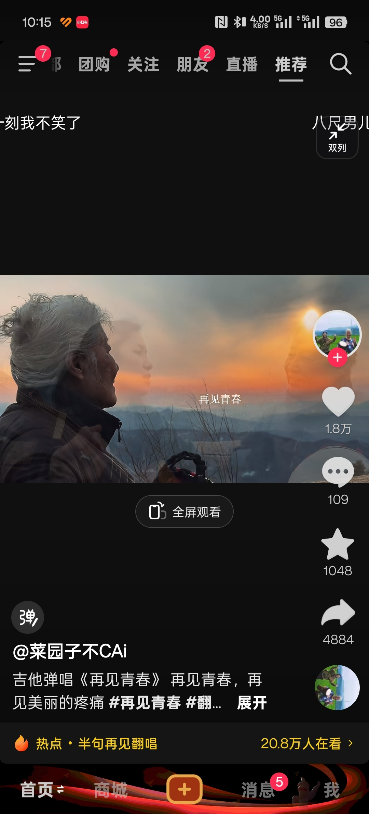

难怪[捂脸]我家主子不听话得挨打，之后越来越听话
他晚上和我同一时间睡，早上5-6点开始跑酷，踩着我肚子冲刺
我服了，看了半天就是蓝天学长做了攻略，发现从扇子崖进去爬泰山可以逃票（虽然没明说，但差不多就是这个意思），结果被拦住说要买泰山票，他就不干了，开始在网上网暴泰山景区。。。
蓝天学长功不可没啊[再见]
蓝天学长还在喊话呢 评论区我看全支持他的呀[流泪]我都不敢去闹
所有景点对本地人有优惠不是很正常的一件事吗[泪奔]我以为这是常识
以后各景点防范一下蓝天学长吧。我从小就见很多爷爷奶奶早晨起来去打水，三十多年了，一直都是这样，每天打水晨练是爷爷奶奶们的日常生活，因为蓝天学长，他们的生活以后便少了一份乐趣吧
蓝天学长咋还不退网呢？[捂脸][捂脸][捂脸]
逃票成功：兄弟姐妹们今天给你们说个小众爬泰山攻略，立省门票钱！ 逃票失败：歧视外地人，通通曝光！
去搜了一下事情经过 结合评论区 我觉得比较可信的是 那条路本来是不过人是用来通大巴的 而本地老人在大巴还没开始上班的早上5-8点走进去是为了去扇子崖打水喝 不进入景区热门景点 也不妨碍别人 所以景区一般不会说什么 也相当于给本地人行个方便 双方都很自觉 至于为什么会有工作人员守在哪里 第一是因为8点以后要拒绝所有人走这条路因为有大巴工作了路上危险 第二是因为绝对有外地人打听到了早上通过这条路可以逃票进景区 方便阻拦 为什么工作人员分得清本地人外地人呢 当然是因为本地人上山打水或者遛弯根本就不会穿着登山鞋 背个登山包 手拿登山杖 外加伸缩杆装备那么齐全
一张图讲解一下。一般情况下，扇子崖是不会有游客。所以就收2.5的进山费。类似水费似的。但是像蓝天学长，他们是明显做了攻略的。装备齐全。知道可以从那里到泰山景区里面的。所以他们原意其实是准备逃票的…但后来被收了全价票，又说只去扇子崖了，不该被收全票，说歧视外地人[微笑][微笑][微笑]这事不该回归本源吗？为什么会被收全票？是不是他们的一些行为引起的呢？那么为什么会有那样的行为呢？为什么要走那个入口呢？这些才应该被关注吧
一群人不远万里带全套装备去扇子崖晨练打水[尬笑]
任何地方给当地人优惠都可以理解。
真不明白一些外地人怎么好意思在别人地界作威作福的[泪奔]
不是，本地的东西给本地的优先用，不是应该的吗？
每个朝代都有人灵机一动[捂脸]
大清：没想到吧，在你灵机一动之前，我就已经灵机一动了[看]
这就是反清复明吗
中国人节约的一生[赞]
看得出来青金石确实很珍贵稀有了
祖宗:怪不得我是你祖宗呢
翻过来，在大明门，改一下，太明门，天明门等
不愧是中国人，都是一个套路[泪奔][泪奔]
看来清朝那会也觉得换牌匾贵
劈两半，中间的要了，就叫大门[看]
也就是说，这个牌子原先就是“大明门”，后面清朝来了，把牌子一翻，刻上“大清门”，是这样理解的吗[不你不想]
[捂脸]怪我们先辈推进的太慢，要不然他们一家人就不会失散多年了。
韩剧直接人心，日剧直击肉体，国剧直击智商[看]
国际市场，神作，把一个男人一个长兄为父的责任拍到极致
韩国人自己的番茄小说！
有没有人可以发我片头片尾天堂旅行团以及“这世界不停开花我想放进你心里一朵”的图片，我没拍到[苦涩]
兰医生终于被重视了！终于被央视报道了！！！[赞]顶上去
中国历史几千年，也不过稻谷熟了几千遍
还让刘邦多使个心眼，谁能有他心眼子多啊[尬笑]
虽然我觉得刘邦是躺赢狗，但是这个转场是真帅
剪的好
以前一句稻子一熟就回来是什么概念
本来想截屏记住这个歌的，但是看到这个虚影[泣不成声][泣不成声] 
Read more: